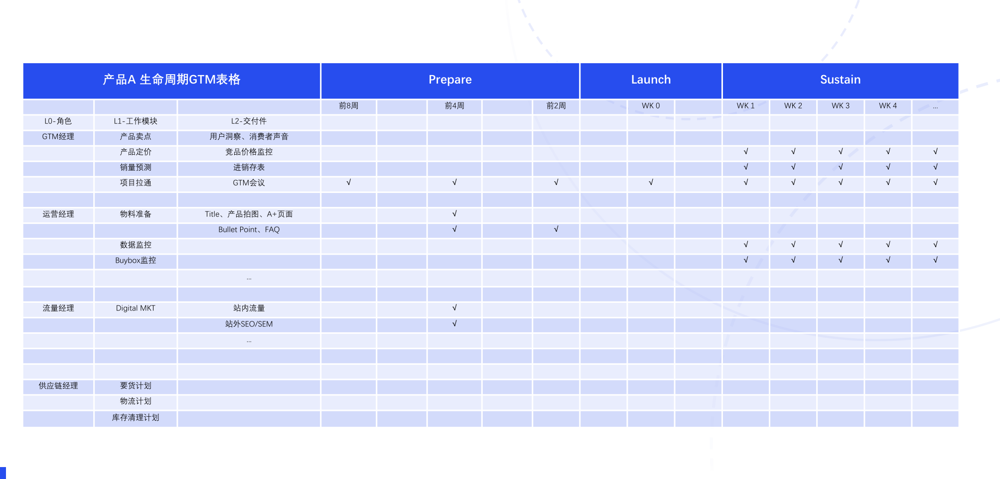
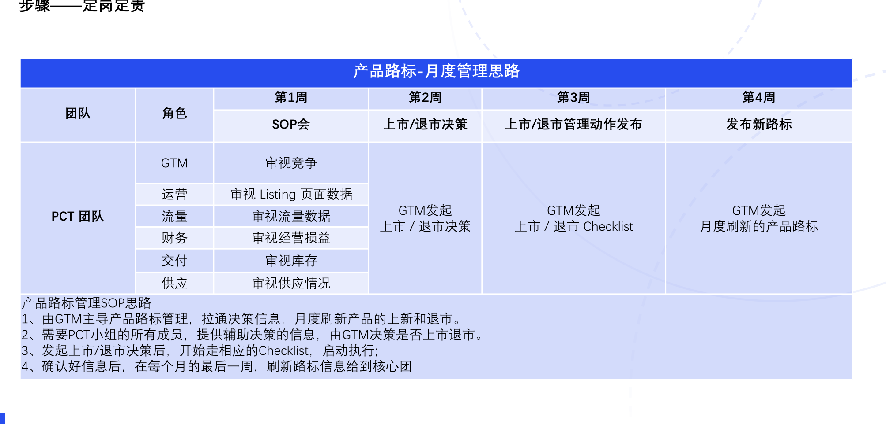
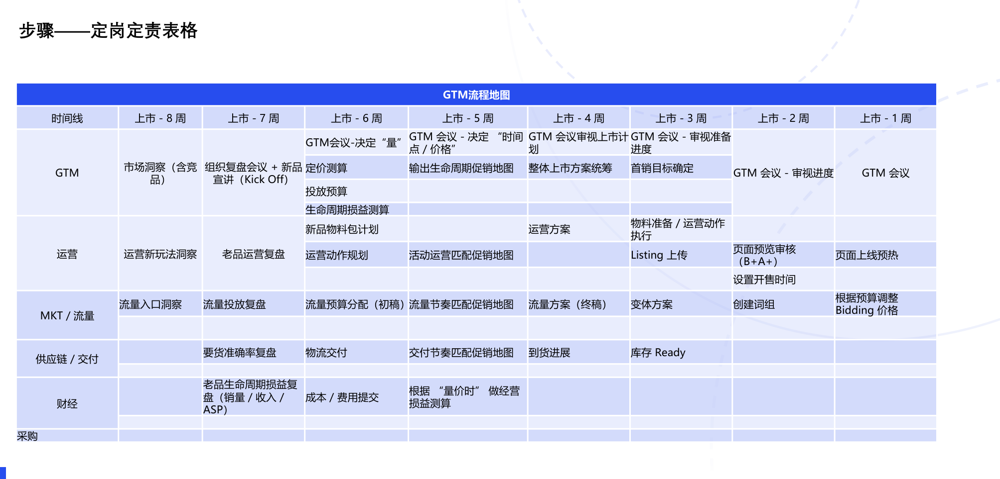

GTM PLAYBOOK / 07
标准动作与交付节奏
定人、定责、定时间，从月度管理推进到上市前八周。
定人、定责、定时间
新品4P上市进展管理表操作流程：
1、 定人：明确哪些角色要参与新品上市的准备工作；
2、 定责：明确对应角色的具体工作模块和交付件内容；
3、 定时间：GTM岗位牵头，把其他岗位需要交付的内容排出Time Line；
GTM要如何管理这个表格：（通过以下会议进行运作）
1、 新品Kick Off会议：一般在上市前2-3个月，主要把产品信息、卖点、价位段等信息与运营/流量/供应链等其他角色的经理分享，并给 4P提要求，要输出哪些交付件；
2、 上市方案会：一般在产品上市前1个月，完成定人、定责、定时间等关键动作，与周边协同部门充分对齐，并开始执行。产品上市方案里，GTM要制定销量目标，投入计划，方便后面项目例会及时追踪。
3、 项目例会：一般一周一次，每次过项目进展，时间不会太长，一般在1小时以内。产品开售前，主要是看关键交付动作是否有延期， 以及审视交付件的质量。及时输出会议纪要，记录遗留事项和与最初计划的偏差。产品开售后，GTM要把实际销量和投入，和最初的计划做对照，看是否达成预期。
4、 项目复盘会：产品上市后，每个月1次复盘，若产品销售超预期，及时总结爆款打造经验（定价/营销/线上展示……）；若产品销售不及预期，群策群力，看看过去上市准备的过程中有哪些偏离了预期（从4P维度去看），哪些消费者不买账。
生命周期标准动作与交付件
| 产品A 生命周期GTM表格 | Prepare | Launch | Sustain | ||||||||||||
|---|---|---|---|---|---|---|---|---|---|---|---|---|---|---|---|
| 前8周 | 前4周 | 前2周 | WK 0 | WK 1 | WK 2 | WK 3 | WK 4 | ... | |||||||
| L0-角色 | L1-工作模块 | L2-交付件 | |||||||||||||
| GTM经理 | 产品卖点 | 用户洞察、消费者声音 | |||||||||||||
| 产品定价 | 竞品价格监控 | √ | √ | √ | √ | √ | |||||||||
| 销量预测 | 进销存表 | √ | √ | √ | √ | √ | |||||||||
| 项目拉通 | GTM会议 | √ | √ | √ | √ | √ | √ | √ | √ | √ | |||||
| 运营经理 | 物料准备 | Title、产品拍图、A+页面 | √ | ||||||||||||
| Bullet Point、FAQ | √ | √ | |||||||||||||
| 数据监控 | √ | √ | √ | √ | √ | ||||||||||
| Buybox监控 | √ | √ | √ | √ | √ | ||||||||||
| ... | |||||||||||||||
| 流量经理 | Digital MKT | 站内流量 | √ | ||||||||||||
| 站外SEO/SEM | √ | ||||||||||||||
| ... | |||||||||||||||
| 供应链经理 | 要货计划 | ||||||||||||||
| 物流计划 | |||||||||||||||
| 库存清理计划 | |||||||||||||||
查看原表图示

按月刷新产品路标
由 GTM 主导产品路标管理，拉通决策信息，每月刷新上新与退市安排。PCT 各成员提供辅助决策的信息；发起决策后，进入相应 Checklist 执行。
| 周次 | 动作与输出 |
|---|---|
| 第 1 周 | 召开 SOP 会，GTM 审视竞争，运营审视 Listing 页面数据，流量审视流量数据，财务审视损益，交付审视库存，供应审视供应情况。 |
| 第 2 周 | GTM 发起上市／退市决策。 |
| 第 3 周 | GTM 发起上市／退市 Checklist，发布并执行管理动作。 |
| 第 4 周 | GTM 发布月度刷新的产品路标，向核心团队同步。 |
查看原表图示

上市前八周的流程地图
GTM 用上市前八周的时间线，牵引运营、MKT／流量、供应链／交付和财经的准备工作。
| 时间 | 关键动作 |
|---|---|
| 上市前 8 周 | GTM 做市场洞察（含竞品）；运营洞察新玩法；MKT／流量洞察流量入口。 |
| 上市前 7 周 | GTM 组织复盘与新品 Kick Off；运营与流量分别复盘老品和投放；交付复盘要货准确率；财经复盘老品生命周期损益。 |
| 上市前 6 周 | GTM 决定量，测算定价、投放预算和生命周期损益；运营规划物料与动作；流量分配预算初稿；交付推进物流；财经提交成本与费用。 |
| 上市前 5 周 | GTM 决定时间点与价格，输出促销地图；运营、流量和交付节奏匹配促销地图；财经根据量、价、时测算经营损益。 |
| 上市前 4 周 | GTM 审视并统筹整体上市计划；运营方案与流量终稿形成；交付跟进到货进展。 |
| 上市前 3 周 | GTM 审视准备进度、确定首销目标；运营准备物料并上传 Listing；流量准备变体方案；交付确认库存 Ready。 |
| 上市前 2 周 | GTM 继续审视进度；运营审核页面预览（B+A+）、设置开售时间；流量创建词组。 |
| 上市前 1 周 | 召开 GTM 会议；运营页面上线预热；MKT／流量根据预算调整 Bidding 价格。 |
查看原表图示
